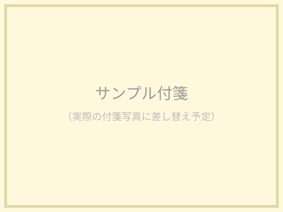

今日出会う一枚
絞り込み
一覧（4件）

面接で「自分らしさ」を聞かれた時、何を答えていますか？
パートナーに一番見せたくない自分は、どんな自分ですか？
「好き」と「必要」の違いは何だと思いますか？
福井で暮らし続けるとしたら、譲れない条件は何ですか？

面接で「自分らしさ」を聞かれた時、何を答えていますか？
パートナーに一番見せたくない自分は、どんな自分ですか？
「好き」と「必要」の違いは何だと思いますか？
福井で暮らし続けるとしたら、譲れない条件は何ですか？